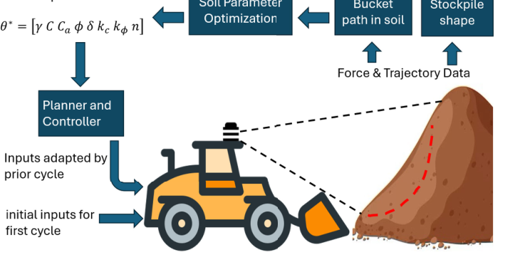
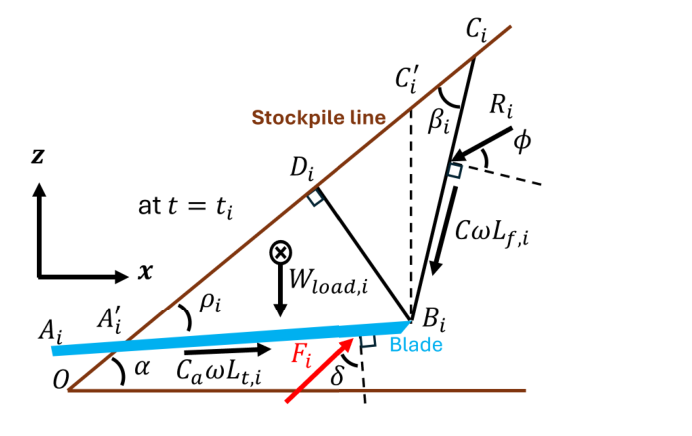
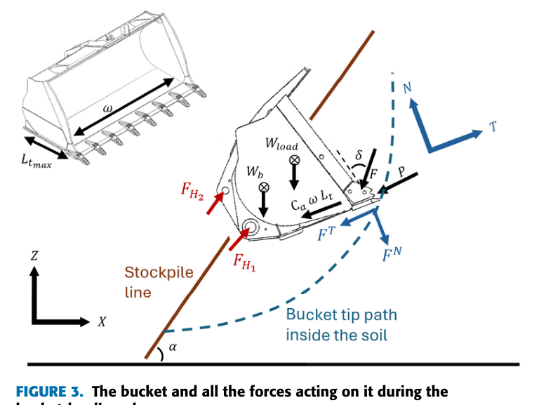
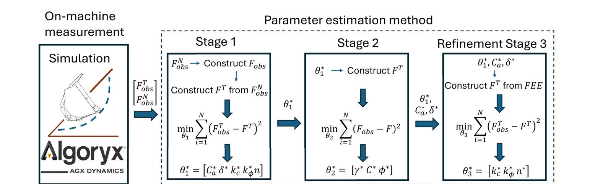
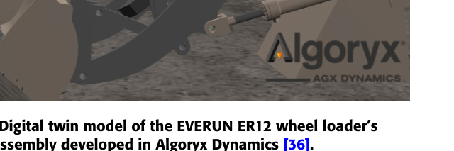
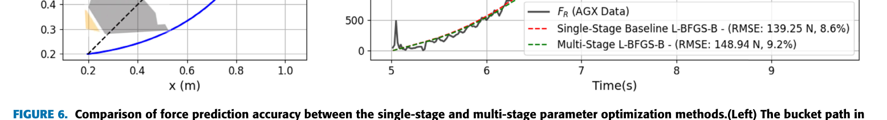
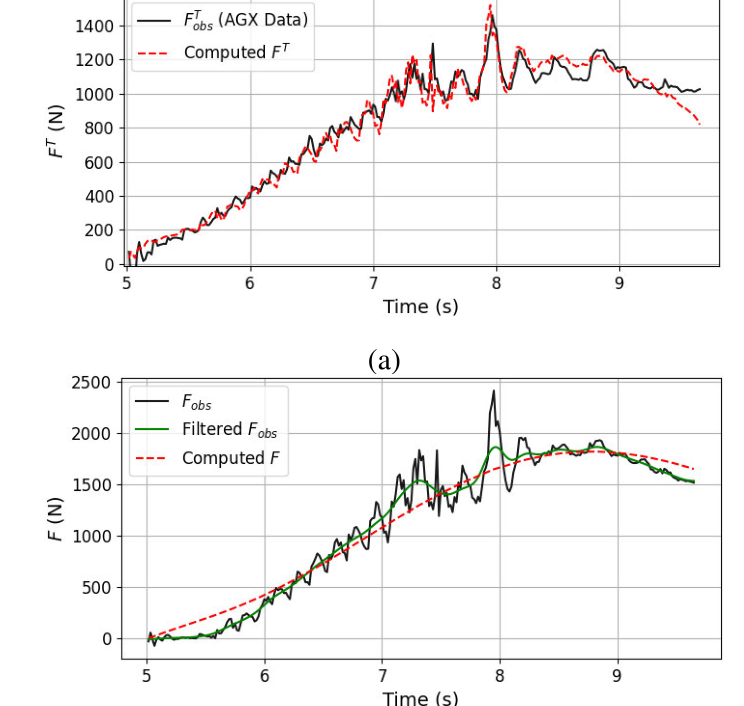
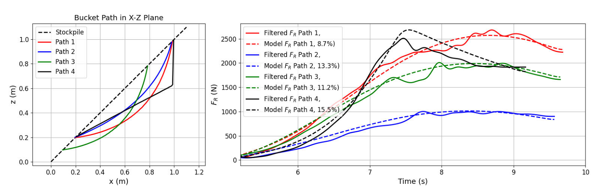
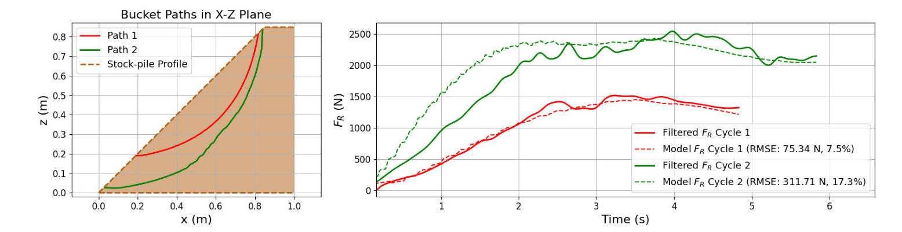
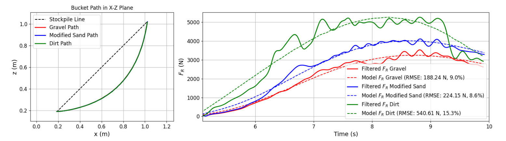

정확한 굴착력 예측은 토공 기계의 자율 운전을 구현하고 제어 전략을 최적화하는 데 매우 중요하다. 기존 접근법은 여러 토양 유형에 걸쳐 광범위한 데이터를 수집하거나 계산 비용이 큰 시뮬레이션을 수행해야 하는 경우가 많으며, 이는 확장성과 적응성을 제한한다. 본 연구는 직전 버킷 적재 사이클의 힘 측정값을 이용해 토양 parameter를 보정하는 데이터 효율적 프레임워크를 제시한다. 제안 방법은 fundamental earthmoving equation으로 정식화된 해석적 soil-tool interaction model을 기반으로 하며, 적재 단계에서 다단계 최적화 절차를 사용해 관련 토양 parameter를 식별한다. 이어서 추정된 parameter를 이용해 다음 사이클의 굴착력을 예측하므로, 대규모 데이터셋이나 machine learning model 훈련에 의존하지 않고도 시스템이 control input을 조정할 수 있다. 서로 다른 토양 유형과 굴착 궤적 조건에서 Algoryx Dynamics 엔진의 고충실도 시뮬레이션을 통해 프레임워크를 검증했으며, 10%에서 15% 사이의 root-mean-square 예측 오차를 달성했다. 이러한 사이클 간 적응은 휠 로더 작업에서 확장 가능한 온라인 힘 추정과 효율적인 경로 계획에 강한 잠재력이 있음을 보여준다.
색인어— 굴착력 추정, soil–tool interaction, 휠 로더 운용, fundamental earthmoving equation, 자율 굴착.
본 원고의 심사를 조정하고 게재를 승인한 associate editor는 Mostafa M. Fouda이다.
© 2025 저자. 본 연구는 Creative Commons Attribution 4.0 License에 따라 이용이 허가된다. 자세한 내용은 https://creativecommons.org/licenses/by/4.0/ 에서 확인할 수 있다.
토공 기계의 자율 운전은 로봇공학, 자동화 및 제어 기술의 발전과 건설 산업의 심화되는 인력 부족으로 인해 현대 공학 및 연구에서 주목받는 분야이다 [1]. 휠 로더는 자율 기계의 한 형태로서, 다양한 환경에서 빈번하게 반복되는 적재 작업을 통해 재료를 운반하고 투하하는 데 널리 사용된다. 버킷 적재 단계는 에너지 수요가 최고에 이르는 구간이며, 토양의 변동성과 예측하기 어려운 tool-material interaction으로 인해 상당한 어려움을 초래한다 [2]. 이 단계의 에너지 사용을 최적화하면 휠 로더 작업의 효율을 크게 향상할 수 있다.
토양 속에서 버킷의 운동을 계획하고 제어할 수 있는 프레임워크를 구현하려면 굴착 중 버킷에 작용하는 힘을 정확히 추정하는 것이 필수적이다. 힘 추정 방법은 일반적으로 reactive 방식과 predictive 방식의 두 범주로 구분된다. Reactive 방식은 유압과 관절 운동 같은 센서 데이터로부터 inverse dynamics, observer 또는 data-driven model을 이용해 힘을 실시간으로 추정한다. 이러한 모델에는 실시간 센서 데이터로 훈련한 Radial Basis Function(RBF) neural network와 같은 순수 data-driven 접근법 [3], 그리고 Gaussian Process Regression을 rigid body dynamics 및 disturbance Kalman filter와 결합한 hybrid 방식 [4]이 포함된다. Inverse dynamics와 observer 설계를 이용하는 model-based 기법도 제안되어 왔다. 그러나 이러한 모델은 시스템 모델링 복잡성이 증가하는 대신 더 높은 안정성과 정밀도를 제공하며 [5], [6], feedback control에는 효과적이지만 task planning에는 적합하지 않다.
Predictive model은 geometry, 토양 및 운동 정보로부터 저항력을 추정하여 실행 전에 경로와 작업을 계획할 수 있게 한다. 이러한 모델링은 주로 시뮬레이션에서 Finite Element Analysis(FEA) 또는 Discrete Element Method(DEM) 등을 통해 수치적으로 수행할 수 있고 [7], [8], task planning과 control에 효과적인 더 빠른 추정을 위해 해석적으로 수행할 수도 있다. 해석 모델은 cutting tool 전방에 삼각형 파괴 영역이 형성된다고 가정하는 soil wedge theory와 같은 물리 메커니즘을 포함하여 굴착 저항력을 직접 추정한다. 이들 모델은 저항력을 토양 특성 및 tool geometry(예: rake angle, tool depth)와 연계한다 [9].
서로 다른 수준의 물리적 세부 묘사와 계산 복잡도로 이러한 저항 상호작용을 포착하기 위해 다양한 해석적 정식화가 개발되었다. Swick and Perumpral model [10]은 경계면 마찰, rake angle의 영향 및 가변 토양 깊이를 포함한다. Gill and Vanden Berg 정식화 [11]는 tool geometry, 속도 및 토양 변형을 고려한다. Hemami [12]는 토양 저항을 동적 arm control과 결합하여 해석 모델링을 robotic manipulator까지 확장하며, Hettiaratchi and Reece model [13]은 cutting force를 passive earth pressure 성분과 friction 성분으로 분해하여 토양 저항 추정을 개선하므로 특히 가변 깊이 시나리오에 적합하다.

널리 채택된 또 다른 힘 모델은 Reece [14]가 처음 제안하고 이후 McKyes [15]가 단순화한 Fundamental Earthmoving Equation(FEE)이다. FEE는 다른 방법에 비해 단순하고 해석적으로 다루기 쉬우며 요구 입력이 적으므로 힘 예측 모델에서 널리 사용되고, control, parameter identification 및 embedded implementation에 매력적이다. 이 모델은 자동 굴착 제어 [16], 실시간 토양 parameter 추정 [17], [18], hybrid neural-physics resistance model [19], reinforcement learning 기반 controller [20], 휠 로더의 multibody simulation [21]을 비롯한 다양한 굴착 맥락에 적용되어 왔다. 이들 모델과 관련 모델에 대한 종합적인 검토는 [9]와 [22]에 제시되어 있다.
이러한 모든 해석적 힘 예측 모델은 cohesion, internal friction angle, adhesion 및 sinkage 특성과 같은 토양 parameter에 의존한다. 이러한 parameter는 일반적으로 현장 probe 시험(예: Cone Penetration Test(CPT), Pressuremeter Test(PMT), Dilatometer Test(DMT) [23]) 또는 통제된 실험실 시험 [24]과 같은 parameter identification 방법으로 얻는다. 이러한 절차는 건설 환경에서 비현실적이므로, 차량 탑재 센서를 사용하여 운전 중 parameter를 추론할 수 있는 on-machine 추정 방법이 등장했다.
On-machine parameter identification 방법 가운데 learning-based 접근법은 사전 데이터를 이용해 재료 유형을 분류하거나 토양 특성을 회귀하는 모델을 훈련한다. 그 예로는 proprioceptive force signal 분류 [25]와 kinematic 및 control 데이터로부터 특성을 추론하는 physics-informed neural network [26]가 있다. 이러한 방법은 효과적이지만 일반적으로 대규모의 labeled dataset과 상당한 offline training을 요구한다.
반면 non-learning-based 방법은 실시간 힘 측정값과 model-based optimization을 이용해 parameter를 직접 추정한다. Tan et al. [18]은 토양 밀도와 internal friction angle을 추정하기 위해 Newton-Raphson 방법을 적용했으며, 이후 Althoefer et al. [27]은 이를 추가 parameter까지 포함하도록 확장했다. Zhao et al. [28]은 parameter와 힘을 동시에 예측하기 위해 fuzzy logic을 향상된 FEE model과 통합하여 모델을 더욱 개선했다. 그러나 이러한 방법은 일부 값을 알려진 것으로 가정하여 추정하는 parameter 수를 제한하거나, 모든 parameter를 한 번에 추정하려 시도하여 수렴 문제와 계산 비효율에 취약한 고차원 최적화를 초래한다.
문헌에서는 세 가지 공백이 드러난다. 첫째 (1), learning-based 접근법은 광범위한 labeled dataset 또는 시뮬레이션을 필요로 하며, 여러 굴착 사이클에 걸쳐 집계한 parameter에 의존하는 경우가 많다 [19], [26]. 둘째 (2), non-learning-based model은 수렴을 저해하는 고차원 최적화의 문제를 겪는다. 셋째 (3), FEE 기반 모델은 삼각함수 특이점으로 인해 힘의 불연속이 나타나며, [29]와 같은 기존 해결책은 추가적인 계산 비용과 지형 민감도를 초래했다.
본 연구는 연속된 굴착 사이클 사이의 짧은 시간 간격 내에 실행되도록 설계된 데이터 효율적인 사이클 기반 parameter optimization 프레임워크를 제시하며, 이를 통해 변하는 토양 조건에 맞추어 작업을 적시에 조정할 수 있다. 공백 (1)을 해결하기 위해 non-learning-based 접근법을 채택하며, 경사진 지형을 고려하고 토양 다짐을 위한 Bekker의 load-sinkage theory [31]를 포함한 [30] 기반의 수정 FEE model을 사용한다. 공백 (2)를 해결하기 위해 parameter fitting 작업을 순차적인 하위 문제로 분해하는 다단계 최적화 전략을 제안하며, 이를 통해 parameter coupling을 줄이고 수렴성과 계산 효율을 향상한다. 마지막으로 공백 (3)을 해결하기 위해 failure surface geometry의 삼각함수 관계에서 유도한 연속성 제약조건을 failure surface 식별에 사용되는 최소화 절차에 직접 포함하여 힘의 불연속을 제거한다.
| 구분 | 기호 | 설명 | 단위 |
|---|---|---|---|
| Soil Parameters | γ | 토양 밀도 | kg/m³ |
| Soil Parameters | C | 토양 cohesion | N/m² |
| Soil Parameters | Cₐ | 토양과 버킷 사이의 adhesion coefficient | N/m² |
| Soil Parameters | φ | internal friction angle | rad |
| Soil Parameters | δ | external friction angle | rad |
| Soil Parameters | k_c | cohesive modulus of deformation | N/m^(n+1) |
| Soil Parameters | k_φ | frictional modulus of deformation | N/m^(n+2) |
| Soil Parameters | n | 토양 변형 지수 | — |
| FEE dimensionless coefficients | N_γ | 토양 단위중량에 대한 bearing capacity factor | — |
| FEE dimensionless coefficients | N_c | cohesion에 대한 bearing capacity factor | — |
| FEE dimensionless coefficients | N_a | adhesion에 대한 bearing capacity factor | — |
| FEE dimensionless coefficients | N_q | surcharge에 대한 bearing capacity factor | — |
| Environment Parameters | α | stockpile slope angle | rad |
| Environment Parameters | β | failure wedge angle | rad |
| Loader Parameters | w | 버킷 폭 | m |
| Loader Parameters | b | 버킷 두께 | m |
| Loader Parameters | W_b | 버킷 중량 | kg |
| Forces and Pressures | F_T | 버킷에 작용하는 tangential cutting force | N |
| Forces and Pressures | F_N | 버킷에 작용하는 normal force | N |
| Forces and Pressures | F_R | 버킷에 작용하는 resultant excavation force | N |
| Forces and Pressures | P | penetration pressure(Bekker load–sinkage model) | Pa |
| Parameter Sets | θ | 전체 토양 parameter vector, [γ, C, Cₐ, φ, δ, k_c, k_φ, n]ᵀ | — |
| Parameter Sets | θ₁ | Stage 1 parameter set, [Cₐ, δ, k_c, k_φ, n]ᵀ | — |
| Parameter Sets | θ₂ | Stage 2 parameter set, [γ, C, φ]ᵀ | — |
| Parameter Sets | θ₃ | Stage 3 parameter set, [k_c, k_φ, n]ᵀ | — |
이 프레임워크는 완전한 굴착 계획 및 제어 시스템에 통합되도록 설계되어, 휠 로더가 사이클마다 환경에 대한 인식을 자율적으로 개선할 수 있게 한다. 그림 1과 같이 전체 과정은 로더에 탑재되었다고 가정한 perception system을 이용해 토양 더미의 초기 geometry를 포착하는 것으로 시작한다. 그런 다음 예비 굴착 사이클을 실행하며, 이 과정에서 kinematic model을 통해 버킷 궤적을 추적하고 로더의 hinge joint에 내장된 load cell로 굴착력을 측정한다. 수집된 궤적, 힘 데이터 및 토양 더미 geometry는 해석적 FEE model의 토양 parameter를 최적화하는 데 사용된다. 이어서 이러한 parameter를 사용해 저항력을 예측하고 다음 사이클의 굴착 전략을 정한다. 각 굴착 사이클 후 이 과정을 반복함으로써 시스템은 토양에 대한 이해를 지속적으로 개선한다. 본 논문은 이 전체 사이클 가운데 굴착력 추정에 초점을 둔다.
본 논문의 II절에서는 해석적 토양 모델, bucket-soil interaction 및 힘 정식화를 포함하여 본 연구에서 사용한 방법론을 제시한다. II절I에서는 제안한 토양 parameter의 다단계 최적화를 설명한다. IV절에서는 방법 구현을 통해 얻은 결과를 제시한다. V절에서는 핵심 시사점과 향후 연구에 대한 함의를 제시한다.
본 절에서는 굴착 중 soil-tool interaction을 모델링하기 위한 프레임워크를 제시한다. 이 프레임워크의 토대는 수정된 FEE [15]이며, 물리적 정확성과 계산 효율 사이의 균형 때문에 이를 선택했다 [32]. 이어서 토양 다짐 효과를 고려하기 위해 Bekker의 load-sinkage 정식화 [31]를 포함하는 방법과 토양 failure surface geometry의 연속성을 강제하는 데 사용되는 삼각함수 유도를 상세히 설명한다.
FEE는 절삭 및 굴착 중 토양 저항력을 추정하기 위한 physics-based 프레임워크를 제공한다. Reece가 1964년에 처음 제안한 이 모델 [14]은 토양에 관입하는 cutting blade에 작용하는 힘을 설명하기 위해 토질역학 원리를 적용한다. 이후 McKyes는 직선 failure surface와 균일한 surcharge pressure를 가정하여 경운 장비에 작용하는 힘을 추정하는 trial wedges method를 사용해 이 프레임워크를 단순화했다 [15]. 그 후 FEE는 경사진 지형으로 확장되어 굴착기 [33]와 휠 로더 [30]의 구조 설계 및 하중 해석에 적용되었다. 더 최근에는 Yao가 model predictive 프레임워크에서 수정 FEE를 사용하여 버킷 적재 궤적을 최적화했다 [32]. 이 모델은 blade가 지형에 관입할 때 soil wedge에 작용하는 전체 저항력을 포착한다.
Blade가 토양에 관입한다고 가정하고, 굴착 경로를 시각 t = t_i의 N개 점으로 이산화하며, 여기서 i ∈ {1, ..., N}이다. 각 점에서 soil wedge의 free body diagram은 그림 2에 제시되어 있다. Stockpile 표면은 α의 각도로 기울어진 직선 OC로 나타내고, blade는 길이가 L_{t,i}이고 stockpile에 대한 각도가 ρ_i인 선분 AB로 모델링한다. Blade 끝단은 점 B이고, 선 BC로 표현되는 failure surface는 McKyes의 wedge theory [15]와 일관되게 직선이라고 가정한다.

Soil wedge에 작용하는 힘에는 external friction angle δ 방향으로 작용하는 blade와 wedge 사이의 순 frictional 및 normal force F_i, internal friction angle φ 방향으로 비교란 토양이 가하는 힘 R_i, failure surface를 따라 작용하는 cohesion force CwL_{f,i}, 그리고 blade를 따라 작용하는 adhesion force C_a wL_{t,i}가 포함된다. Blade가 전진함에 따라 L_{t,i}와 L_{f,i}는 모두 시간에 따라 변한다. 모든 토양, 환경 및 로더 parameter는 표 1에 열거되어 있다.
C_a wL_{t,i}와 CwL_{f,i}는 blade와 토양의 geometry에서 유도할 수 있다. W_{load,i}는 [3]과 [5]에서 설명한 방법을 사용해 운전 중 추정한다. 힘 F_i와 R_i는 미지수이다. F_i를 계산하기 위해 평형 조건을 가정하고 x 및 z 방향으로 Newton의 힘 평형 방정식을 적용한다. 이들 방정식을 이용하면 F_i를 W_{load,i}, C_a wL_{t,i}, CwL_{f,i}의 함수로 나타낼 수 있으므로 미지의 힘 R_i를 제거할 수 있다. 그 결과 F_i는 다음과 같이 표현된다.
F_i = d_i² wγgN_{γ,i} + Cwd_iN_{c,i}
+ C_a wd_iN_{a,i} + W_{load,i}N_{q,i}. (1)
여기서 d_i는 관입 깊이이며, 점 B에서 OC와 같은 stockpile 선까지의 거리로 구한다. N_{γ,i}, N_{c,i}, N_{a,i}, N_{q,i}는 다음과 같은 네 개의 bearing capacity factor이다.
(cot β_i − tan α)[cos α + sin α cot(β_i + φ)]
N_{γ,i} = -------------------------------------------------. (2)
2[cos(ρ_i + δ) + sin(ρ_i + δ) cot(β_i + φ)]
1 + cot β_i cot(β_i + φ)
N_{c,i} = ------------------------------------------------. (3)
cos(ρ_i + δ) + sin(ρ_i + δ) cot(β_i + φ)
1 − cot ρ_i cot(β_i + φ)
N_{a,i} = ------------------------------------------------. (4)
cos(ρ_i + δ) + sin(ρ_i + δ) cot(β_i + φ)
cos α + sin α cot(β_i + φ)
N_{q,i} = ------------------------------------------------. (5)
cos(ρ_i + δ) + sin(ρ_i + δ) cot(β_i + φ)
이 무차원 계수들은 서로 다른 토양 특성이 cutting force에 미치는 영향을 나타낸다. Unit weight factor로 알려진 N_{γ,i}는 토양 중량이 전체 힘에 기여하는 정도를 나타낸다. Cohesion factor N_{c,i}는 토양 cohesion의 영향을 고려하고, adhesion factor N_{a,i}는 토양과 버킷 사이 adhesion force의 기여도를 정량화한다. 마지막으로 surcharge factor N_{q,i}는 굴착 중 토양에 가해지는 overburden pressure 또는 외부 하중의 영향을 나타낸다. 각도 β_i는 N_{γ,i}를 최소화하여 결정한다.
현재 형태의 FEE는 특정 geometry 구성에서 불연속 문제가 발생한다. 식 (2)–(5)의 bearing capacity factor 분모에는 cotangent 항이 포함되어 있으며, 이 항은 무한대로 발산하여 수치 불안정성을 유발할 수 있다. 이러한 한계를 극복하기 위해 일련의 삼각함수 조작을 도입하여 bearing capacity factor를 표준적인 sine-cosine 형태로 재정식화한다. 이 재정식화를 통해 불연속이 발생하는 조건을 명시적으로 식별하고 이를 회피할 수 있다. β에 대해 안정적이고 물리적으로 타당한 해를 보장하기 위해 N_γ의 최소화 단계에서 유계 제약조건을 부과한다.
이 과정을 시작하기 위해 N_γ의 표현식을 살펴보면 다음과 같이 쓸 수 있다.
sin(α + β_i + φ)
cos α + sin α cot(β_i + φ) = ----------------------------. (6)
sin(β_i + φ)
cos(ρ_i + δ) + sin(ρ_i + δ) cot(β_i + φ)
sin(ρ_i + δ + β_i + φ)
= ----------------------------. (7)
sin(β_i + φ)
sin(β_i + φ)를 약분하고 이 항이 0이 아니어야 함을 인식하면 N_γ를 다음과 같이 다시 쓸 수 있다.
(cot β_i − tan α) sin(α + β_i + φ)
N_γ = -------------------------------------. (8)
2 sin(ρ_i + δ + β_i + φ)
또한 다음 관계를 사용하면
cos(α + β_i)
cot β_i − tan α = ----------------, (9)
cos α cos β_i
N_γ는 다음과 같이 된다.
cos(α + β_i) sin(α + β_i + φ)
N_{γ,i} = ---------------------------------------------. (10)
2 cos α sin β_i sin(ρ_i + δ + β_i + φ)
마찬가지로 N_c, N_a, N_q는 다음과 같이 다시 쓸 수 있다.
cos φ
N_{c,i} = ------------------------------------, (11)
sin β_i sin(ρ_i + δ + β_i + φ)
cos(ρ_i + β_i + φ) sin(β_i + φ)
N_{a,i} = − ------------------------------------------------, (12)
sin ρ_i sin(β_i + φ) sin(ρ_i + δ + β_i + φ)
sin(α + β_i + φ)
N_{q,i} = ------------------------------------. (13)
sin(ρ_i + δ + β_i + φ)
FEE 기반 모델에서 연속적인 힘 출력을 보장하려면 식 (10)–(13)의 분모에 있는 특정 삼각함수 항이 0이 아니어야 한다. 따라서 sin(β_i) ≠ 0, sin(ρ_i) ≠ 0, cos(α) ≠ 0, sin(β_i + φ) ≠ 0 및 sin(ρ_i + δ + β_i + φ) ≠ 0의 조건을 만족해야 한다. 그러나 실제로는 이러한 조건만으로 충분하지 않다. 시간 이산화로 인해 time step 사이에서 zero-crossing이 발생하더라도 명시적으로 포착되지 않을 수 있으며, 이는 계산된 힘의 불연속이나 수치적 불안정성으로 이어질 수 있다. 이러한 가능성을 완화하기 위해 각 삼각함수 항이 |·| > ε을 만족하도록 강제하며, 여기서 ε은 양의 threshold이다.
위 조건 중 일부는 환경 제약조건으로 인해 본질적으로 충족된다. Stockpile angle α는 재료의 angle of repose에 의해 제한되며 일반적으로 45°보다 작으므로 cos α > 0.7이 보장된다. Blade penetration angle ρ도 최소 threshold보다 커야 하는데, 0에 가까운 값에서는 blade가 표면과 거의 평행해져 FEE model의 soil wedge 가정이 성립하지 않기 때문이다(그림 2 참조). 이 시뮬레이션에서는 ρ가 10°보다 크게 유지되도록 제한한다.
나머지 조건은 sin(β_i), sin(β_i + φ), sin(ρ_i + δ + β_i + φ) 항과 관련된다. 앞서 언급했듯이 N_γ를 최소화하는 동안 β_i에 유계 제약조건을 부과한다. 유효한 soil wedge에서는 β_i가 엄격히 양수여야 한다. 일반적인 internal friction angle φ가 22°에서 40° 사이임을 고려하면(표 A1 참조), sin(β_i + φ) 항은 안정적인 값을 유지한다. 그러나 sin(ρ_i + δ + β_i + φ)는 π 부근에서 0에 가까워질 수 있어 수치 불안정성을 초래한다. N_γ 최소화에 적용할 제약조건 집합은 다음과 같다.
β_i > ε₁, |ρ_i + δ + β_i + φ − π| > ε₂, (14)
여기서 ε₁과 ε₂는 작은 양의 margin이며, 둘 다 5°의 상수값으로 설정한다. 이 ε 값의 선택은 데이터 수집 빈도와 식 (14)의 각도 변화에 근거한다.
FEE model 사용에는 추가적인 가정이 수반된다는 점에 유의해야 한다. 대부분의 quasi-static 토양 모델과 마찬가지로 FEE 기반 힘 저항 모델은 버킷이 느리고 일정하게 운동한다고 가정한다. 이 가정은 실시간 구현을 단순화하지만 동적인 토양 변위 효과는 고려하지 않는다. 굴착 중 동적 geometry update를 포함하는 것은 향후 모델 개선을 위한 중요한 방향으로 남아 있다.
다음 단계에서는 그림 2의 cutting blade처럼 버킷 blade를 모델링하며, soil wedge는 버킷을 따라 그리고 버킷 내부에 형성된다. 버킷에 작용하는 힘을 해석하며, 여기에는 FEE에서 유도한 resultant force와 Bekker의 load–sinkage 정식화 [31]로 모델링한 normal compaction force가 포함된다.
[29]와 [30]에서 착안하여 버킷 적재 과정에서 버킷 blade에 작용하는 모든 힘을 그림 3에 나타냈다. 전체 힘에는 본 연구에서 FEE force라 지칭하는 reaction force F_i, 토양과 blade 사이의 adhesion force C_a wL_{t,i}, 그리고 penetration pressure P_i가 포함된다. Penetration pressure P_i는 다음과 같다.
k_c
P_i = (--- + k_φ)d_iⁿ. (15)
b
여기서 b는 cutting edge의 두께이고, k_c와 k_φ는 각각 cohesive modulus of deformation과 frictional modulus of deformation이며, n은 토양 변형 지수이다. 버킷 blade에 작용하는 resultant force는 normal-tangential 좌표계에서 F_i^T와 F_i^N으로 다음과 같이 쓸 수 있다.
F_i^T = wbP_i + F_i sin δ + C_a wL_{t,i}, (16)
F_i^N = F_i cos δ. (17)
이 힘들은 그림 3과 같이 hinge의 load cell을 통해 측정되는 힘 F_{H1}, F_{H2}와 관련된다. 버킷에 적재된 토양의 중량은 버킷의 위치와 stockpile geometry를 이용해 추정하므로 버킷 중량 W_b를 알 수 있다.

II절에서 bucket-soil interaction을 위한 FEE model을 정립한 뒤 토양 parameter 값을 최적화한다. 표 1에 열거했듯이 굴착력을 모델링하려면 8개의 토양 parameter θ를 최적화해야 한다.
θ = [γ C C_a φ δ k_c k_φ n]ᵀ. (18)
전체 parameter optimization 프레임워크는 II절에서 설명한 해석 모델을 버킷에서 측정한 힘 데이터에 fitting하는 방식으로 작동한다. 첫 번째 필수 입력은 탑재 센서(예: 버킷에 장착된 inertial measurement unit(IMU))로 얻거나 front-end mechanism의 kinematic model [34]을 사용해 cylinder stroke로부터 추론한 버킷의 위치와 방향이다. 이 geometry 정보는 각 time step에서 soil wedge 구성을 정의한다. 두 번째 입력은 그림 3에 표시한 hinge force F_{H1}과 F_{H2}이다. 이 측정값을 각각 F_obs^N과 F_obs^T로 나타낸 normal 및 tangential component로 분해하며, 이들이 관측 힘으로 사용된다. 그런 다음 프레임워크는 관측된 버킷 힘과 해석적으로 예측한 버킷 힘 사이의 차이를 최소화하여 토양 parameter θ를 추정하는 optimization-based 접근법을 적용한다. Least squares 방법으로 충분한 선형 시스템과 달리 nonlinear soil-tool interaction model에는 nonlinear optimization이 필요하다. 이러한 최적화는 중첩된 삼각함수 표현식, 힘-각도 의존성, geometry 기반 항뿐 아니라 토양 parameter와 출력 힘 사이의 implicit하고 constrained된 관계로 인해 발생한다.
Parameter optimization 문제는 토양 관련 8개 양을 독립변수로 취급하여 정식화한다. 그러나 힘 모델의 높은 차원성과 비선형성 때문에 모든 parameter를 동시에 최적화하면 수렴이 나빠지고 비효율적이기 쉽다. 이러한 한계를 극복하기 위해 다단계 최적화 접근법을 도입한다. 모델 방정식의 수학적 분석을 통해 항들이 자연스럽게 분리됨을 알 수 있으며, 이에 따라 parameter를 서로 다른 subset으로 묶어 순차적으로 최적화할 수 있다.
이 기준선은 8개 토양 parameter를 모두 동시에 추정하는 단일 단계 최적화로 구성되며, 다단계 정식화를 평가하기 위한 기준으로 사용된다. 문제는 constrained nonlinear least-squares optimization으로 정식화하고 유계 제약조건을 처리할 수 있는 gradient-based algorithm L-BFGS-B [35]로 해결한다. 모델이 non-convex이므로 최적화는 초기 parameter 값에 민감하며 local minimum으로 수렴할 수 있다. 이를 완화하기 위해 warm-starting, randomized initialization, multiple starting point를 포함한 여러 전략을 시험하였다.
Warm-start는 두 형태로 검토하였다. 하나는 토양 매개변수 범위 내의 값으로 초기화하는 방식이고, 다른 하나는 이전 사이클에서 추정한 매개변수를 재사용하는 방식이다. 이러한 접근법은 수렴성을 향상하였다. 향후 연구에서는 토양 매개변수와 초기화 선택에 대한 체계적인 민감도 분석에 초점을 맞출 것이다.
기준선 단일 단계 최적화의 최적화 문제는 다음과 같이 정식화한다.
min_(θ) J_(θ)
= λ Σ_(i=1)^(N)(F_(obs,i)^(T)-F_i^(T))^2
+(1-λ)Σ_(i=1)^(N)(F_(obs,i)^(N)-F_i^(N))^2, (19a)
s.t. F_i^(T)
=wbP_i+F_isinδ+C_a wL_(t,i), (19b)
F_i^(N)=F_icosδ, (19c)
P_i=((k_c)/(b)+k_φ)d_i^n, (19d)
F_i=d_i^2wγ gN_(γ,i)+Cwd_iN_(c,i)
+C_awd_iN_(a,i)+W_(load)N_(q,i), (19e)
N_(γ,i)=f_γ(α,β_i,φ,ρ_i,δ), (19f)
N_(c,i)=f_c(β_i,φ,ρ_i,δ), (19g)
N_(a,i)=f_a(β_i,φ,ρ_i,δ), (19h)
N_(q,i)=f_q(α,β_i,φ,ρ_i,δ), i=1,…,N, (19i)
θ_(min)&≤θ≤θ_(max). (19j)
여기서 F_i^T와 F_i^N는 모델이 예측한 접선 방향 힘과 법선 방향 힘을 나타내며, F_(obs,i)^T와 F_(obs,i)^N는 센서 데이터에서 얻은 각각의 대응 관측(측정)값을 나타낸다. 목적함수 J_(θ)는 이들 접선 방향 및 법선 방향 힘 예측의 차이에 대응하는 두 평균제곱오차 항의 가중합으로 정의한다. 각 항의 상대적 기여도를 제어하기 위해 가중 매개변수 λ를 도입한다. 두 항의 기여도를 균형 있게 유지하기 위해 λ=0.5로 가정한다.
제약조건 (19b)는 식 (16)에 따라 접선 방향 힘을 정의하며, 제약조건 (19c)는 식 (17)에 따라 법선 방향 힘을 규정한다. FEE에서 구한 전체 저항력은 식 (1)에 정의된 대로 제약조건 (19e)를 통해 포함한다. 식 (2)–(5)에서 유도한 지지력 계수는 (19f)–(19i)에 명시적으로 나타난다. 물리적으로 의미 있는 결과를 보장하기 위해 문헌에 보고되고 표 A1과 표 A2에 요약된 범위를 바탕으로 토양 매개변수에 강제 경계 제약조건을 적용한다. 밀도 γ의 범위는 1297–2345 kg/m^3로 설정한다. 점착력 C와 부착력 C_a는 모두 0–50000 N/m^2로 제한하며, 이는 연약토에서 견고한 토양까지, 그리고 비점착성 토양에서 점착성 토양까지를 포괄한다. 내부 및 외부 마찰각은 0^–45^, 즉 0.0–0.785 rad로 제한한다. Bekker의 압력–침하 매개변수에 허용한 범위는 k_c=0.00–10.0 /m^(n+1), k_φ=0–5000 /m^(n+2), 지수 n=0.11–1.53이다. 이 한계는 본 논문에서 수행한 모든 매개변수 추정 접근법에 동일하게 적용한다.
복잡한 비선형 모델에서 많은 매개변수를 최적화할 때 모든 매개변수를 동시에 풀면 수렴성이 나빠지고 계산 비용이 커질 수 있다. 이러한 가능성을 극복하기 위해 매개변수 추정 문제를 여러 단계로 분해하는 순차 최적화 접근법을 채택한다. 이러한 분해는 식 (15), (16), (17)의 힘 평형 방정식 형태를 분석함으로써 가능하며, 이 식들은 매개변수 그룹 사이에 분리 가능한 의존성이 있음을 보여준다. 먼저 측정값에서 직접 얻은 버킷 힘의 법선 성분 F_(obs)^N으로 시작하고, 식 (17)을 사용하여 FEE 힘 F를 다음과 같이 재구성한다.
F_(obs)^N=Fcosδ,
F_(obs)=_(obs)^Ncosδ.
(20)
여기서 F_(obs)는 관측 법선 힘으로부터 재구성한 FEE 등가 전체 힘을 나타낸다. 식 (20)과 (15)를 접선 방향 힘 식 (16)에 대입하면 다음을 얻는다.
F^T=wb((k_c)/(b)+k_φ)d^n
+F_(obs)^Ntanδ+C_awL_t.
(21)
이 정식화로부터 매개변수 부분집합 θ_1을 다음과 같이 식별한다.
θ_1=
_a&δ&k_c&k_φ&n^(T).
(22)
관측 법선 힘 F_(obs)^N으로 구성한 식 (21)의 힘 F^T가 1단계 최적화의 기초를 이룬다. 이 단계의 목적은 식 (21)에서 계산한 예측 접선 방향 힘과 관측값의 차이를 최소화하는 것이다. 비용함수 J_(θ_1)^(1)과 관련 제약조건은 다음과 같이 정의한다.
min_(θ_1) J_(θ_1)^(1)
=Σ_(i=1)^(N)(F_(obs,i)^(T)-F_i^(T))^2, (23a)
s.t. F_i^(T)
=wb((k_c)/(b)+k_φ)d_i^n
+F_(obs,i)^(N)tanδ+C_awL_(t,i), i=1,…,N, (23b)
θ_(1,min)&≤θ_1≤θ_(1,max). (23c)

이 최적화 문제를 풀어 첫 번째 최적 매개변수 집합 θ_1^*을 다음과 같이 얻는다.
θ_1^*=
_a^*&δ^*&k_c^*&k_φ^*&n^*^(T).
(24)
2단계는 앞서 구한 해 θ_1^*의 값을 고정하고 두 번째 단계의 정식화에 포함함으로써 이를 바탕으로 진행한다. 최적 매개변수 δ^*와 식 (20)을 사용하면 법선 힘 F_(obs)^N을 바탕으로 재구성 FEE 힘 F_(obs)를 다음과 같이 계산할 수 있다.
F_(obs)=_(obs)^Ncosδ^*.
(25)
식 (25)와 (1)은 매개변수 최적화 2단계의 토대이다. 이 단계에서는 1단계에서 식 (25)와 같이 결정한 매개변수 부분집합을 사용하여, 식 (1)의 경험적 접근법으로 추정한 FEE 힘과 관측 데이터의 차이를 최적화한다. 비용함수는 관측 FEE 힘과 예측 FEE 힘의 차이를 최소화하는 비선형 최소제곱 목적함수로 정식화한다. 두 번째 매개변수 부분집합은 다음과 같다.
θ_2=
γ&C&φ^(T).
(26)
비용함수와 제약조건의 전체 집합은 다음과 같다.
min_(θ_2) J_(θ_2)
=Σ_(i=1)^(N)(F_(obs,i)-F_i)^2, (27a)
s.t. F_i
=d_i^2wγ gN_(γ,i)+Cwd_iN_(c,i)
+C_a^*wd_iN_(a,i)+W_(load)N_(q,i), (27b)
N_(γ,i)=f_γ(α,β_i,φ,ρ_i,δ^*), (27c)
N_(c,i)=f_c(β_i,φ,ρ_i,δ^*), (27d)
N_(a,i)=f_a(β_i,φ,ρ_i,δ^*), (27e)
N_(q,i)=f_q(α,β_i,φ,ρ_i,δ^*), i=1,…,N, (27f)
θ_(2,min)&≤θ_2≤θ_(2,max). (27g)

이 최적화 정식화에서 비용함수는 관측 힘 (25)와 (27b)에 정의된 F_i의 차이를 최소화한다. 기준선 최적화와 달리 (27b)는 고정 매개변수 C_a^*를 사용하여 정의한다. (27c)–(27f)의 네 지지력 계수는 (2)–(5)와 동일한 방법론으로 계산한다. 마찬가지로 외부 마찰각 δ^*도 앞 단계의 최적화 결과에서 얻은 고정 매개변수로 취급한다.
다단계 최적화 결과에서는 법선 힘 F^N의 평균제곱근오차(RMSE)가 접선 방향 힘 F^T의 RMSE보다 일관되게 낮았다. 이러한 차이는 관측 법선 힘 F_(obs)^N으로부터 전체 힘 F를 재구성한다는 초기 가정과 부합하며, 이로 인해 추정 과정은 본질적으로 법선 방향의 정확도 향상에 편향된다. 이러한 불균형을 해소하고 접선 방향 힘의 오차를 더 줄이기 위해 세 번째 정련 단계를 도입한다. 이 단계에서는 축소차수 모델링 접근법을 사용하여 접선 성분에 주로 영향을 미치는 매개변수 부분집합을 재최적화하고, 나머지 매개변수는 앞 단계에서 구한 값으로 고정한다. 지배 방정식을 분석하고 접선 방향 힘 F^T에는 영향을 주지만 법선 방향 힘 F^N에는 영향을 주지 않는 매개변수를 분리하여 이 부분집합을 식별한다. 식 (16)과 (17)에 따르면 Bekker의 압력–침하 정식화로 모델링한 다짐 압력 항 P는 F^T에만 영향을 미친다. 관련 매개변수는 k_c, k_φ, n이다. 이 단계의 최적화는 λ=1로 설정한 기준선 정식화를 따르며, 나머지 모든 매개변수는 앞 단계에서 얻은 값으로 고정한다. 이 정련 단계에서 재최적화하는 최종 매개변수 부분집합은 다음과 같다.
θ_3=
_c&k_φ&n^(T).
(28)
이 정련 과정은 힘 예측의 균형을 다시 맞추고 추정 및 관측 접선 방향 힘과 법선 방향 힘 사이의 일관성을 높인다.
표 2. Algoryx Terrain에서 추출한 자갈, 모래, 흙의 벌크 및 입자 특성과 수정 모래의 특성. 제안 방법이 서로 다른 밀도 및 마찰각 값에 얼마나 민감한지 시험하기 위해 수정 모래의 값을 수동으로 변경하여 밀도와 마찰각의 변화를 확대한다.
| 특성 | Gravel | Sand | Dirt | Modified Sand |
|---|---|---|---|---|
| 벌크 특성 | ||||
| Cohesion (Pa) | 0.0 | 0.0 | 2100 | 0.0 |
| Density (kg/m³) | 1474.0 | 1474.0 | 1474.0 | 1874.5 |
| Dilatancy Angle (radians) | 0.19188 | 0.157 | 0.2267 | 0.157 |
| Friction Angle (radians) | 0.7679 | 0.6807 | 0.6978 | 0.5934 |
| Maximum Density (kg/m³) | 1600.0 | 1800.0 | 2000.0 | 2100.0 |
| Poisson’s Ratio | 0.1 | 0.1 | 0.15 | 0.1 |
| Swell Factor | 1.0 | 1.0 | 1.1 | 1.0 |
| Young’s Modulus (Pa) | 4.6E+6 | 4.5E+6 | 6.5E+6 | 4.6E+6 |
| Delta Repose Angle (radians) | 0.0 | 0.0 | 0.0 | 0.0 |
| 입자 특성 | ||||
| Particle Cohesion (Pa) | 0.0 | 0.0 | 2500.0 | 0.0 |
| Particle Rolling Resistance | 0.3 | 0.1 | 0.1 | 0.1 |
| Particle-Terrain Cohesion (Pa) | 0.0 | 0.0 | 2500.0 | 0.0 |
| Particle-Terrain Friction | 0.9 | 0.7 | 0.7 | 0.7 |
| Particle-Terrain Restitution | 0.1 | 0.0 | 0.0 | 0.0 |
| Particle-Terrain Rolling Resistance | 0.9 | 0.7 | 0.7 | 0.7 |
| Particle-Terrain Young’s Modulus (Pa) | 1E+8 | 1E+8 | 1E+8 | 1E+8 |
| Particle Young’s Modulus (Pa) | 1E+7 | 1E+7 | 1E+7 | 1E+7 |

본 연구는 Algoryx [37]가 개발한 물리 엔진 Algoryx Dynamics의 고충실도 시뮬레이션을 사용하여 굴착 시나리오를 모델링한다. 시뮬레이션 환경의 스냅숏을 그림 5에 제시하며, 휠 로더가 토양 더미와 상호작용하는 모습을 보여준다. Algoryx는 접촉 및 마찰 동역학을 포함하는 다물체 시스템에 특화되어 있고 변형 가능한 환경에서 관절형 기계를 시뮬레이션하기에 적합하다. 비평활 다물체 동역학 [38], DEM [39], Hertz–Mindlin 접촉 이론 [40]을 통합하여 토양–도구 상호작용을 포착한다.
토양은 Algoryx terrain 모듈로 시뮬레이션하며, 이 모듈은 토양을 6자유도를 갖는 구형 입자의 집합으로 나타낸다. 이 입자들은 Hertz 탄성, Coulomb 마찰, 구름 저항을 통해 상호작용한다. 재료 특성은 벌크 거동, 다짐, 입자 상호작용, 지형 접촉에 미치는 영향에 따라 범주별로 지정한다. Algoryx terrain의 재료 특성은 네 범주로 구분한다. 벌크 특성은 토양 밀도, 파괴 영역 형상, 굴착력과 같은 전반적 거동을 지배하고, 다짐 특성은 압축에 대한 토양의 반응을 정의하며, 입자 특성은 토양 입자 사이 및 입자와 지형 사이의 접촉 동역학을 조절하고, 굴착 접촉 특성은 삽, 지형, 토양 집합체 사이의 상호작용을 관리한다. Algoryx Terrain은 자갈, 모래, 흙의 세 가지 일반적인 토양 유형에 대한 사전 설정 매개변수가 포함된 내장 재료 라이브러리도 제공한다. 이 사전 설정의 벌크 및 입자 특성을 추출하여 표 2에 상세히 제시한다.
Algoryx Dynamics는 UC Davis의 Advanced Highway Maintenance and Construction Technology(AHMCT) Research Center에서 개발한 EVERUN ER12 휠 로더의 보정된 디지털 트윈을 사용하여 검증되었다. 실제 장비에는 유압 센서, 경사계, 버킷 힌지의 맞춤형 2축 로드 핀을 장착하였다. 이전 연구 [36]에서는 실제 운용 데이터를 사용하여 시뮬레이션 매개변수를 보정하고 검증하였다.
표 3. 매개변수 최적화 방법 비교: 단일 단계 및 다단계 L-BFGS-B. 서로 다른 최적화 단계에 걸쳐 그룹화한 토양 매개변수와 RMSE 값을 제시한다.
| 방법 | 단계 | γ (kg/m³) |
C (N/m²) |
C_a (N/m²) |
φ (°) |
δ (°) |
k_c (N/m^(n+1)) |
k_φ (N/m^(n+2)) |
n (–) |
결과/RMSE | 시간 (s) |
|---|---|---|---|---|---|---|---|---|---|---|---|
| Single-Stage | – | 1600.1 | 152.4 | 0.0 | 45.0 | 36.7 | 748.0 | 163.8 | 1.06 | F^T: 96.2 N (9.0%); F^N: 137.7 N (11.4%); F_R: 139.2 N (8.6%) |
87.21 |
| Multi-Stage | – | 1635.1 | 183.5 | 0.0 | 45.0 | 35.1 | 745.6 | 166.9 | 0.91 | F^T: 97.3 N (9.1%); F^N: 139.6 N (11.6%); F_R: 141.1 N (8.7%) |
47.00 |
| Multi-Stage | Stage 1 | – | – | 0.0 | – | 35.1 | 993.6 | 558.6 | 0.46 | Stage 1 RMSE: 103.1 N (9.6%) | 20.37 |
| Multi-Stage | Stage 2 | 1635.1 | 183.5 | – | 45.0 | – | – | – | – | Stage 2 RMSE: 108.5 N (7.4%) | 16.49 |
| Multi-Stage | Stage 3 | – | – | – | – | – | 745.6 | 166.9 | 0.91 | Stage 3 RMSE: 97.3 N (9.1%) | 10.14 |

Algoryx Dynamics terrain 모델은 본 해석 프레임워크와 근본적으로 다르다는 점에 유의해야 한다. Algoryx는 수치적 입자 기반 접근법으로 토양 거동을 시뮬레이션하는 반면, 본 모델은 방정식에 기반한 해석 모델이다. 따라서 두 접근법에서 사용하는 매개변수 집합은 형태와 목적이 모두 다르다. 그러나 토양 밀도 γ, 점착력 C, 부착력 C_a, 내부 마찰각 φ와 같은 일부 물리 매개변수는 두 모델이 공유한다.
본 연구의 결과는 제안한 힘 추정 프레임워크의 성능과 일반화 가능성을 평가하도록 구성한다. 분석은 주어진 버킷 경로, 자세, 속도 프로파일과 함께 x–z 평면에서 일관된 굴착 궤적으로 정의되는 고정 버킷 적재 사이클에서 시작한다.
먼저 다단계 최적화 접근법을 III-A절에서 도입한 기준선 방법과 비교하며, 두 방법 모두 L-BFGS-B 알고리즘 [35]으로 푼다. 일관성을 위해 모든 최적화 실행에서 최대 반복 횟수 1000회, 기울기 노름 허용오차 10^(-5), 경계가 지정된 매개변수 범위, 유한차분을 통한 기울기 근사라는 동일한 하이퍼파라미터를 사용한다. 모든 방법은 동일한 초기 추정값으로 초기화하고 동일한 장비(14세대 Intel Core i9)에서 실행한다. 일반화 가능성을 평가하기 위해 훈련–시험 전략을 사용한다. 한 굴착 사이클(“훈련” 단계)에서 매개변수를 최적화한 뒤, 별개의 보지 못한 경로(“시험” 단계)의 힘을 예측하는 데 사용한다. 또한 초기 굴착에서 추정한 매개변수를 후속 사이클에 적용하는 이중 사이클 시나리오를 평가한다. 지형에 대한 민감도를 조사하기 위해 궤적을 고정한 채 서로 다른 토양 유형에서 매개변수 최적화 과정을 반복한다. 모델 성능은 F_R=√(F^T)^2+(F^N)^2로 정의한 합력의 RMSE를 Algoryx 시뮬레이션에서 얻은 정답 합력 F_(R,obs)와 비교하여 평가한다.
기준선 접근법과 비교하여 다단계 매개변수 최적화 방법을 평가하기 위해 단일 버킷 적재 시나리오를 시뮬레이션한다. 이 시나리오는 토양 진입부터 버킷 이탈까지의 전체 굴착 사이클을 포착하며, 4.67초 동안 60 Hz의 빈도로 버킷 힘 데이터를 기록하여 총 281개 데이터점을 얻는다. 토양은 표 2의 재료 특성을 갖는 자갈로 구성된 사다리꼴 적치토로 모델링한다. 이 사이클 동안 버킷 끝의 궤적은 그림 6의 왼쪽 패널에 제시한다. 이 “단일 경로”는 전형적인 매끄러운 버킷 적재 운동을 나타낸다.
단일 단계 및 다단계 최적화의 매개변수 최적화 결과를 표 3에 요약한다. 단일 단계 방법에서 접선 방향 힘 F^T와 법선 방향 힘 F^N의 RMSE는 각각 9.0%와 11.4%이고, 합력 F_R의 RMSE는 8.6%이다. 전체 수렴 시간은 87.21초이다. 다단계 방법은 F^T에서 9.1%, F^N에서 11.6%, F_R에서 8.9%로 약간 더 높은 RMSE를 보였지만, 전체 최적화 시간을 46% 단축하여 세 단계에 걸쳐 47.0초 만에 수렴하였다. 이러한 절충은 계산 자원과 응답 시간이 제약되는 실시간 자율 굴착처럼 빠른 사이클 간 적응이 필요한 시나리오에서 다단계 최적화에 유리하다.
기존 방법과 비교할 때 다단계 접근법은 더 높은 데이터 효율성과 함께 경쟁력 있는 정확도를 제공한다. 예를 들어 Yu et al. [19]은 순수 FEE 모델을 사용하여 수직 힘 RMSE 18.92%를, 실제 굴착 사이클 10개로 훈련한 하이브리드 FEE–RNN 모델을 사용하여 10.54%를 보고하였다. 이들의 하이브리드 방법은 정확도를 높이지만 대규모 데이터셋과 오프라인 훈련에 의존한다. 본 프레임워크는 단 하나의 굴착 사이클만으로 유사한 성능을 달성하고 학습 인프라가 필요하지 않으므로 온라인 구현에 더 실용적이다. 마찬가지로 Luengo et al. [17]은 경사 효과와 토양 재성형력을 고려하도록 고전 FEE 모델을 재정식화하여 8개 굴착 사이클에서 힘 예측 오차를 약 30,000 N에서 13,000 N으로 줄였다. 그러나 이들의 매개변수 추정은 전수 탐색에 최대 20시간이 걸리는 계산 집약적 방법에 의존했으며, 하이브리드 simulated annealing–Powell 최적화도 여전히 수분이 걸렸다. 이에 비해 제안 프레임워크는 단일 사이클 데이터와 기울기 기반 최적화로 정확한 힘 예측을 달성한다. Tan et al. [18]도 Mohr–Coulomb 및 Chen–Liu Upper Bound(CLUB) 모델에 Newton–Raphson 알고리즘을 적용한 온라인 토양 매개변수 추정을 탐구하여 Parameter Space Intersection Method(PSIM)보다 최대 3500배 빠른 계산을 달성하였다. 이들의 접근법은 견고한 수렴성을 보였지만 안정적인 추정을 위해 반복 굴착 시험이 필요했으며, 단순화한 기하학적 가정으로 인해 매개변수가 더 적은 모델에 의존하여 복잡한 토양–도구 상호작용을 포착하는 능력이 제한되었다. 이에 비해 제안한 다단계 프레임워크는 해석적 취급 가능성을 유지하고 반복 시험이나 표 조회를 피하면서 단일 굴착 사이클로 효율적인 힘 예측을 제공한다.
시나리오의 특성은 모델 성능에 영향을 미친다. 이 사례에서는 매끄러운 궤적이 FEE 모델 예측의 정확도 향상에 기여한다. 이것이 다른 연구보다 낮은 RMSE 값의 원인일 수 있지만, 에너지 최적이며 충격이 없는 버킷 운동을 선호한다는 목표와 부합한다. 자율 굴착에서는 갑작스러운 힘 전이가 바람직하지 않으므로, 더 매끄러운 토양 픽업은 모델링 관점의 선호 사항인 동시에 운용 목표이다.

표 4. 다단계 최적화 접근법을 사용한 서로 다른 토양 유형의 Algoryx(AGX) 토양 매개변수와 매개변수 추정(PE) 결과.
| 토양 매개변수 | Gravel AGX | Gravel PE | Modified Sand AGX | Modified Sand PE | Dirt AGX | Dirt PE |
|---|---|---|---|---|---|---|
γ (kg/m³) |
1474.0 | 1513.4 | 1874.5 | 1802.3 | 1474.0 | 1833.17 |
C (N/m²) |
0.0 | 143.8 | 0.0 | 216.0 | 2100.0 | 0.0 |
C_a (N/m²) |
0.0 | 184.0 | 0.0 | 72.4 | 2500.0 | 3039.52 |
φ (rad) |
0.76 | 0.78 | 0.59 | 0.78 | 0.69 | 0.37 |
δ (rad) |
N/A | 0.63 | N/A | 0.66 | N/A | 0.39 |
k_c (N/m^(n+1)) |
N/A | 1274.0 | N/A | 1807.6 | N/A | 5486.1 |
k_φ (N/m^(n+2)) |
N/A | 177.4 | N/A | 188.0 | N/A | 261.3 |
n (–) |
N/A | 1.21 | N/A | 1.50 | N/A | 1.44 |
F_R RMSE, N (%) |
N/A | 188.2 (9.0%) | N/A | 224.1 (8.6%) | N/A | 540.6 (15.3%) |
| 시간 (s) | N/A | 44.05 | N/A | 38.23 | N/A | 41.37 |

다단계 최적화의 각 단계 결과를 그림 7에 제시한다. 1단계에서는 전체 FEE 모델을 사용하지 않고 매개변수 부분집합 θ_1을 최적화한다. 대신 관측 법선 힘 F_(obs)^N으로부터 FEE 힘 F_i를 직접 재구성한다. 따라서 입력 힘과 출력 힘을 모두 시뮬레이션 데이터에서 유도하므로 최적화가 측정 잡음에 덜 민감하고 필터링이 필요하지 않다. 전처리가 없어도 예측 힘과 기준 힘이 밀접하게 일치하는 그림 7a에서 이러한 견고성을 확인할 수 있다. 이 단계는 후속 단계보다 많은 5개 매개변수를 추정하므로 계산량도 가장 많다.
2단계에서는 1단계에서 최적화한 매개변수 θ_1^*을 고정하고, 전체 FEE 모델을 시뮬레이션 데이터에 적합하여 나머지 매개변수를 식별한다. 수렴성을 높이고 잡음과 진동의 영향을 완화하기 위해 Gaussian 필터링을 적용한다(그림 7b 참조). 이 시나리오에서 F^T의 RMSE는 여전히 높은데, 이는 주로 접선 방향 힘에 강한 영향을 미치는 다짐 항 P의 거동 때문이다. 이처럼 오차가 계속 높은 것은 비선형 침하 역학이 지배하는 힘 성분을 모델링할 때 알려진 난제를 반영하며, FEE의 준정적 정식화가 갖는 한계 안에 있다. 따라서 모델 구조의 해석적 취급 가능성을 유지하면서 적합도를 개선하기 위해 정련 단계를 도입한다.
3단계에서는 다짐 관련 매개변수만 재최적화하고 나머지 모든 매개변수는 앞서 식별한 값으로 고정한다. 이 표적 정련은 기준선 단일 단계 방법에서 설명한 것과 동일한 최적화 프레임워크를 사용하되, 접선 방향 힘 예측의 개선에만 초점을 맞추므로 가중계수를 λ=1로 설정하여 수행한다. 전체 매개변수 집합 중 일부만 최적화하므로 이 단계는 축소차수 모델링 접근법에 해당한다. 정련을 통해 정확도가 크게 향상되어 RMSE가 F^T에서 7.6%, F^N에서 7.0%, F_R에서 6.8%로 감소하며, 추가 계산 시간은 10.14초에 불과하다.
제안한 매개변수 최적화 방법들의 성능을 정성적으로 비교하기 위해 그림 6의 오른쪽 패널에 합력을 제시한다. 두 접근법 모두 전반적인 힘의 추세를 밀접하게 따르지만, 단일 단계 방법이 최대 힘의 정렬과 전체 RMSE에서 다단계 방법보다 약간 우수하다.
본 연구의 목적은 다음 굴착 사이클의 힘을 신뢰성 있게 추정하는 것이므로, 분석에서는 단일 토양 프로파일에 초점을 맞추고 다단계 최적화 접근법을 적용한다. 그림 8과 같이 각 궤적은 동일한 적치토에서 버킷 자세와 깊이를 달리한 고유한 굴착 운동을 나타낸다. 궤적은 이차 Bézier 정식화를 사용하여 생성하였으며, 곡률 제어 매개변수를 조정하여 (1) 서로 다른 곡률, (2) 서로 다른 시작점/끝점, (3) 구간별 선형 경로를 만들었다. 왼쪽 패널은 x–z 평면에서 각 궤적의 예를 하나씩 보여주고, 오른쪽 패널은 예측 합력 F_R과 관측 합력을 비교한다.
이 평가에서는 Path 1을 매개변수 추정에 사용하고 Path 2–4를 식별된 매개변수를 사용하는 시험 사례로 설정한다. 모델은 모든 경로에서 11.2%–15.5%의 RMSE를 달성한다. 특히 Path 3은 시작점과 끝점이 다르지만 Path 1과 동일한 운동 프로파일을 공유하며 가장 높은 정확도를 보인다. 이 결과는 공간적 위치보다 운동 동역학의 유사성이 일반화에 더 큰 영향을 미침을 시사한다. 궤적이 원래 궤적에서 더 멀리 벗어날수록 예측 오차는 증가하지만 15.5% 미만으로 유지되며, 이는 궤적 의존적 변화가 핵심 난제임을 나타낸다. 모델은 전반적인 힘의 추세를 포착하지만, 최대 힘 발생 시점의 불일치는 관입 속도나 도구–토양 접촉의 급격한 변화와 같은 과도 동역학을 모델링하는 데 한계가 있음을 보여준다. 이러한 문제는 속도나 가속도 의존성이 없는 준정적 FEE 정식화에서 비롯될 가능성이 크다. 속도 민감 접촉 역학이나 관성 효과와 같은 동적 항을 통합하면 급격한 전이에 대한 모델의 응답성을 높이고 과도 굴착 단계에서 예측 정확도를 향상할 수 있다.
현재 결과에서 포착하지 못한 한 가지 측면은 이전 굴착 패스로 인해 토사 더미 형상이 변하는 효과이며, 이는 후속 궤적에 대한 모델의 예측 정확도에 영향을 미칠 수 있다. 이 효과를 평가하기 위해 2사이클 굴착 시나리오를 고려한다. 첫 번째 사이클에서 버킷은 토사 더미에 진입한 뒤 빠져나오며, 이에 대응하는 힘 데이터를 매개변수 추정에 사용한다. 이 시나리오는 그림 9에 시각화되어 있으며, 토사 더미는 갈색으로, 버킷 끝단의 궤적은 첫 번째 사이클에서 빨간색으로, 두 번째 사이클에서 녹색으로 표시되어 있다. 이 실행 결과는 매개변수 최적화 방법이 식별된 매개변수, 즉 토양 밀도 γ=1855 kg/m^3, 점착력 C=194.25 N/m^2, 부착력 C_a=0 N/m^2, 내부 마찰각 φ=45^, 외부 마찰각 δ=35.37^, 다짐 매개변수 k_c=1298 /m^(n+1), k_φ=250 /m^(n+2), n=1.50을 사용하여 사이클 1에서 7.5%의 RMSE를 달성함을 보여준다.
그런 다음 식별된 매개변수를 사용하여 그림 9의 오른쪽 패널에 나타낸 것처럼 두 번째 사이클의 힘을 예측한다. 그러나 첫 번째 굴착 사이클이 끝난 뒤에는 재료 변위와 중력 침하로 인해 토양 표면의 형상이 바뀐다. 대부분의 경우 이렇게 형성된 표면은 재료의 안식각으로 정의되는 선형 경사면에 근사한다. 따라서 후속 굴착 사이클에서는 토사 더미 표면을 경사진 직선으로 모델링하는 것이 일반적이다. 그러나 이 시뮬레이션과 같은 일부 경우에는 토양이 균일한 경사면으로 무너지지 않고 최초 굴착에서 파낸 형상을 유지한다. 선형 표면 가정에서 벗어나는 이러한 현상은 후속 계산, 특히 관입 깊이 추정에 오차를 유발할 수 있다.
이 문제를 해결하기 위해 관입 깊이 계산 방법을 수정한다. 삼각형 토사 더미를 가정하고 버킷 끝단에서 이상화된 경사면까지의 거리 BD를 깊이로 측정하는 대신(그림 2 참조), 사이클 1에서 실제로 굴착된 표면까지의 거리를 직접 측정한다. 그림 9에 제시한 2사이클 시나리오에서는 첫 번째 사이클의 빨간색 궤적을 기준으로 깊이를 측정하는 것에 해당한다. 이 조정을 통해 모델은 토사 더미의 실제 형상을 더 잘 반영하며 후속 사이클의 힘 예측 정확도를 개선한다.
사이클 2에서 모델은 적응형 굴착 깊이 추정을 도입하여 17.3%의 RMSE를 달성한다. 고정된 삼각형 쐐기를 가정하지 않고 실제 굴착 표면을 기준으로 깊이를 추정함으로써 모델은 실제 상호작용 형상을 더 잘 포착하고 힘 예측 정확도를 높인다. 더 강건한 해법은 쐐기 형상을 일정한 토사 더미 각도나 고정된 삼각형 형태로 제한하지 않는 적응형 토양 모델링 프레임워크를 도입하는 것이다. 이 프레임워크에서는 굴착 전 과정에 걸쳐 변화하는 실제 토양 표면의 형상에 쐐기가 동적으로 일치한다. 이처럼 형상을 인식하며 적응하는 토양–도구 상호작용 모델의 설계는 향후 연구의 유망한 방향이다.

제안한 힘 추정 방법이 서로 다른 토양 유형에 적응하는 능력을 평가하기 위해 표 2에 요약한 자갈, 모래, 흙을 포함하여 Algoryx [37]의 여러 토양 구성을 시험한다. 자갈과 모래는 밀도(1474 kg/m^3)가 동일하고 점착력이 0으로 서로 유사하므로, 점토질 모래를 나타내는 수정 모래 프로파일을 도입한다. 이 새로운 프로파일은 평균 밀도 1874.5 kg/m^3와 감소된 내부 마찰각 0.59 rad을 사용하며, 이는 표 A1에 보고된 점토질 모래의 값과 일치한다.
자갈, 수정 모래, 흙에 대해 매개변수 최적화로 얻은 합력 추세를 그림 10에서 비교한다. 표 4는 추정한 토양 매개변수와 Algoryx 기준값을 비교한다. 밀도의 경우 모든 추정값, 즉 자갈의 1513.4, 수정 모래의 1802.3, 흙의 1833.2 kg/m^3는 문헌에 보고된 1297–2345 kg/m^3 범위 안에 있으며, Algoryx 값에 대한 편차는 각각 3.7%, 6.9%, 34.3%이다.
점착력과 부착력의 경우 문헌은 연약한 점성토부터 단단한 점성토까지 최대 50000 N/m^2의 값을 허용하지만, Algoryx 라이브러리는 제시된 매개변수 범위에 대해 0–2500 N/m^2 범위를 사용한다. Algoryx와의 일관성을 유지하기 위해 추정 결과를 평가할 때 0–2500 N/m^2의 경계를 채택한다. 자갈(143.8 N/m^2)과 수정 모래(216 N/m^2)의 추정 점착력은 이 Algoryx 일관 범위 안에 있으나, 흙은 Algoryx 값 2100 N/m^2에 비해 C=0을 반환한다. 이 차이는 더 높은 부착력(3039.5 N/m^2)으로 보상된다. 이 값은 Algoryx의 2500 N/m^2 한계를 21.6% 초과하지만 문헌에 보고된 범위 안에 있다. 자갈(184 N/m^2)과 수정 모래(72.4 N/m^2)의 부착력 값은 각각 오차 7.36%와 2.9%로 범위 안에 충분히 들어간다.
내부 마찰각 추정값(자갈과 수정 모래는 0.78 rad, 흙은 0.37 rad)은 문헌 범위 0.37–0.69 rad에 해당한다. 자갈과 수정 모래의 값은 Algoryx 기준값(0.76 rad 및 0.59 rad)을 약간 초과하지만, 흙의 값은 하한과 일치하며 물리적으로도 타당하다. 나머지 매개변수는 Algoryx에서 실측 참값을 제공하지 않으므로 직접 비교할 수 없다.
현재의 최적화 프레임워크는 간소화한 비용함수로 관측 힘과 모델링한 힘 사이의 차이를 최소화하여 정확한 힘 예측을 우선하도록 설계되었다는 점이 중요하다. 이 접근법은 굴착 힘 추정에 맞춘 강건하고 데이터 효율적인 매개변수 피팅을 가능하게 한다. 식별된 매개변수는 물리적으로 측정한 토양 값과 완벽히 일치하도록 제약되지 않지만 현실적인 경계 안에 있으며 예측 모델링에 효과적이다. 향후에는 추가적인 물리적 제약이나 정규화 기법을 모델에 도입하여 매개변수의 해석 가능성을 높이고 힘 모델링과 토양 특성화의 연계를 더욱 강화할 수 있다.
본 연구에서는 실시간 토양 매개변수 최적화와 수정된 해석적 힘 모델을 이용하여 휠 로더의 굴착 힘을 추정하는 데이터 효율적 프레임워크를 제시하였다. 제안한 방법은 힘 예측에서 최저 8.6%의 RMSE를 달성했으며, 다단계 제약 최적화 전략을 통해 계산 시간을 45% 이상 줄였다.
이 프레임워크는 이전 버킷 적재 사이클의 힘 데이터를 활용하여 밀도, 점착력, 부착력, 내부 및 외부 마찰각, 다짐과 같은 토양 매개변수를 보정하고, 이를 다음 사이클의 저항력 예측에 사용한다. 이 과정은 대규모 데이터셋이나 오프라인 훈련 없이 사이클마다 적응하는 굴착 계획을 가능하게 한다. 이 방법론은 수정된 기본 토공 방정식(Fundamental Earthmoving Equation)에 연속성 제약과 Bekker의 하중–침하 공식을 통합하여 수치적 안정성과 물리적 타당성을 모두 개선한다.
고충실도 Algoryx Dynamics 시뮬레이션으로 검증한 결과, 이 접근법은 서로 다른 궤적과 토양 유형 전반에 효과적으로 일반화할 수 있다. 적은 데이터 요구량과 높은 계산 효율성 덕분에 굴착 사이클 사이의 시간 간격 안에 실행하기에 적합하며, 자율 굴착 시스템의 적시 적응을 지원한다.
향후 연구에서는 속도, 가속도, 관성 효과를 포착하도록 동적 힘 모델링을 도입해 프레임워크를 확장하고, 굴착 중 토양 변위와 형상 표현을 개선하며, 초기화 민감도를 다루는 더 체계적인 전략을 포함하고, 시뮬레이션을 넘어 실험 플랫폼에서 성능을 검증할 것이다. 이러한 노력은 준정적 공식, 단순화한 토사 더미 가정, 초기화 의존성, 시뮬레이션 기반 검증 의존이라는 현재의 한계를 해결하는 것을 목표로 한다. 또한 향후 연구에서는 비전과 깊이 감지 같은 지각 기반 기법을 탐구하여 토양 유형과 표면 특성을 추론하고, 이를 통해 토양 매개변수 정확도를 개선할 수 있는 보완 정보를 제공할 것이다.
저자들은 시뮬레이션 소프트웨어 사용 권한을 제공한 스웨덴의 Algoryx Simulation에 감사를 표한다. 또한 원고 문장의 명료성을 다듬는 데 AI 기반 도구를 사용했음을 밝힌다. 본 연구는 Komatsu Ltd.의 부분 지원을 받았다. 저자들은 이 재정 지원에 깊이 감사한다.
현실적인 매개변수 경계를 설정하기 위해 여러 문헌 자료와 공학 데이터베이스에서 값을 수집하였다. 공학 데이터 온라인 플랫폼인 StructX [41]에서 토양 상관계, 밀도, 탄성계수, 푸아송비, 안식각, 점성토와 비점성토의 특성을 확보하였다. 토양 밀도 범위는 [42]를 포함한 과거 및 현대 문헌에서 가져왔으며, 점착 및 마찰 특성은 [43]과 같은 편람에서 수집하였다. 추가적인 점착력 및 내부 마찰각 값은 통일토질분류법(Unified Soil Classification System, USCS) [45]에 따른 토양 매개변수를 보고하는 EcorisQ [44]에서 얻었다. 부착계수 범위는 지반공학 실무에서 널리 사용하는 도구 모음인 GEO5 지반공학 소프트웨어 자료 [46]와 교차 확인하였다.
위 자료들은 토양 유형 또는 토양 상태에 따른 토양 밀도 γ, 점착력 C, 부착력 C_a, 내부 마찰각 φ와 같은 매개변수를 제공하며, 이를 표 A1에 요약한다. 토양–구조물 상호작용을 지배하는 외부 마찰각 δ는 내부 마찰각 φ와 접촉면 재료(예: 강철, 콘크리트, 목재)의 물성에 모두 좌우된다. Delft Sand, Clay, and Rock Cutting Model [47]은 δ와 φ 사이의 전형적인 관계를 보고하며, 흔히 δ를 φ의 일정 비율로 표현한다. 대표적인 외부 마찰값은 표 A1의 끝부분에 포함한다. 일반적인 건설 장비와의 일관성을 위해 휠 로더 버킷은 강철로 제작된다고 가정한다.
위에서 요약한 매개변수 외에도 Bekker의 하중–침하 공식은 k_c(점착 변형계수), k_φ(마찰 변형계수), n(변형 지수)이라는 세 가지 추가 수량을 도입한다. 이 매개변수들은 하중을 받는 토양의 비선형 압력–침하 관계를 특성화하며, 굴착 과정에서 절삭 및 관입 저항을 모델링하는 데 특히 중요하다. 지형역학에서 널리 적용되는 Bekker 공식은 행성 표면, 농경지, 비포장 건설 현장과 같은 연약하고 변형 가능한 지형에서 운행하는 바퀴와 궤도의 토양 침하를 예측할 수 있게 한다. 여러 자료에 보고된 이 매개변수 값을 표 A2에 정리한다.
표 A1. 여러 자료에서 수집한 토양 매개변수 요약. 매개변수는 토양 유형(USCS 분류 사용), 토양 상태 또는 토양과 접촉하는 재료를 기준으로 분류한다. 가능한 경우 밀도 γ, 점착력 C, 부착력 C_a, 내부 마찰각 φ를 제시한다. 외부 마찰각 δ 값은 [47]에서 정리한 관계에 따라 토양과 접촉하는 재료를 기준으로 한다. 대시(–)는 해당 토양 분류에서 값이 보고되지 않았거나 적용되지 않음을 나타낸다.
| 토양 설명 | USCS 분류 | 밀도 γ (kg/m^3) |
점착력 C (kPa) |
부착력 C_a (kPa) |
내부 마찰각 φ (°) |
외부 마찰각 δ (°) |
|---|---|---|---|---|---|---|
| 토양 유형별 분류. [41], [42], [43]에서 인용 | ||||||
| 입도 분포가 양호한 자갈, 세립~조립 자갈 | GW | 1631–1937 | 0 | – | 40 | – |
| 입도 분포가 불량한 자갈 | GP | 1631–1937 | 0 | – | 38 | – |
| 실트질 자갈 | GM | 1297–1500 | 0 | – | 36 | – |
| 점토질 자갈 | GC | 1297–1500 | 0 | – | 34 | – |
| 세립분을 함유한 점토질 자갈 | GC-CL | 1297–1500 | 3 | – | 29 | – |
| 입도 분포가 양호한 모래, 세립~조립 모래 | SW | 1410–2279 | 0 | – | 38 | – |
| 입도 분포가 불량한 모래 | SP | 1410–2279 | 0 | – | 36 | – |
| 실트질 모래 | SM | 1378–2371 | 0 | – | 34 | – |
| 점토질 모래 | SC | 1378–2371 | 0 | – | 32 | – |
| 실트 | ML | 1300–1380 | 0 | – | 33 | – |
| 저소성 점토, 빈배합 점토 | CL | 1330–1390 | 20 | – | 27 | – |
| 고소성 점토, 고배합 점토 | CH | 1330–1470 | 25 | – | 22 | – |
| 유기질 실트, 유기질 점토 | OL | 1330–1500 | 10 | – | 25 | – |
| 유기질 점토, 유기질 실트 | OH | 1330–1500 | 10 | – | 22 | – |
| 고소성 실트, 탄성 실트 | MH | 1300–1380 | 5 | – | 24 | – |
| 토양 상태별 분류. [44], [46]에서 인용 | ||||||
| 연약 및 매우 연약한 점성토 | – | – | 0–12 | 0–12 | – | – |
| 중간 연경도의 점성토 | – | – | 12–24 | 12–24 | – | – |
| 단단한 점성토 | – | – | 24–48 | 24–48 | – | – |
| 매우 단단한 점성토 | – | – | 48–96 | 48–96 | – | – |
| 매우 연약한 토양 | – | 1631–1937 | 0–10 | – | – | – |
| 연약한 토양 | – | 1733–2039 | 10–25 | – | – | – |
| 보통 토양 | – | 1784–2141 | 25–50 | – | – | – |
| 단단한 토양 | – | 1835–2243 | 50–100 | – | – | – |
| 매우 단단한 토양 | – | 2141–2243 | 100–200 | – | – | – |
| 경질 토양 | – | 2039–2345 | 200– | – | – | – |
| 접촉 재료별 외부 마찰각 분류. [47]에서 인용 | ||||||
| 강재 말뚝(NAVFAC) | – | – | – | – | – | 20^ |
| USACE | – | – | – | – | – | 0.67φ–0.83φ |
| 강철(Broms) | – | – | – | – | – | 20^ |
| 콘크리트(Broms) | – | – | – | – | – | 3/4φ |
| 목재(Broms) | – | – | – | – | – | 2/3φ |
| Lindeburg | – | – | – | – | – | 2/3φ |
| 콘크리트 벽(Coulomb) | – | – | – | – | – | 2/3φ |
표 A2. 서로 다른 토양 유형의 압력–침하 매개변수. 여러 문헌에 보고된 값을 수집하였다. 표는 인용한 각 문헌에서 가져온 값에 따라 구분한다.
| 토양 유형 | k_c (/m^(n+1)) |
k_φ (/m^(n+2)) |
n |
|---|---|---|---|
| 연약지반 궤도차량 거동 시뮬레이션 [48]에서 인용 | |||
| 건조 느슨한 모래 | 0.00E+00 | 1.58E+03 | 1.01 |
| 건조 조밀한 모래 | 9.57E+01 | 3.27E+03 | 1.15 |
| 건조 모래 LLL¹ | 0.99E+00 | 1.52E+03 | 1.10 |
| 중점토 WES² 40 | 1.84E+00 | 1.03E+02 | 0.11 |
| 빈배합 점토 WES² 32 | 1.52E+00 | 1.19E+02 | 0.15 |
| LETE³ 모래 | 1.02E+02 | 5.30E+03 | 0.79 |
| LETE³ 모래 2nd | 6.94E+00 | 5.06E+02 | 0.71 |
| 사질 양토 | 1.19E+01 | 6.74E+02 | 0.81 |
| 연설(Soft Snow) | 6.16E+00 | 1.49E+02 | 1.53 |
| IIT 건조 모래⁴ [49] | -1.12E+02 | 3.101E+03 | 0.75 |
| Carrier의 달 매개변수⁵ [50]에서 인용 | |||
| 토양 유형 A | 0.00E+00 | 8.20E+02 | 1.00 |
| 토양 유형 B | 1.40E+00 | 8.20E+02 | 1.00 |
| 토양 유형 C | 2.80E+00 | 8.20E+02 | 1.00 |
| 행성 토양의 변형 [51]에서 인용 | |||
| 달 | 0.14E+00 | 8.20E+02 | 1.00 |
| 화성(MSS-A⁶) | 1.87E+01 | 7.63E+02 | 0.63 |
| 지구(건조 모래) | 0.99E+00 | 1.52E+03 | 1.10 |
| 지구(점토) | 1.31E+01 | 6.92E+02 | 0.50 |
¹ LLL: Lunar Logistics Load 모사 토양.
² WES: Waterways Experiment Station 토양 분류.
³ LETE: 캐나다 국방부 Land Engineering Test Establishment.
⁴ IIT: Illinois Institute of Technology에서 시험한 토양.
⁵ 토양 유형 A, B, C는 달 탐사차 설계 단계에서 예상되는 달 표면 조건을 포괄하기 위해 개발한 이론적 토양 모델을 의미한다. 유형 A는 최소 토양 강도 특성, 유형 B는 중앙값(공칭) 조건, 유형 C는 최대 토양 강도 특성을 나타낸다.
⁶ MSS-A: Mars Soil Simulant A.
[1] Associated General Contractors of America and Arcoro. (2024). 2024 Workforce Survey Analysis. [Online]. Available: https://www.agc.org/sites/default/files/Files/Communications/2024WorkforceSurveyAnalysis.pdf
[2] M. Gottschalk, G. Jacobs, and A. Kramer, “Test method for evaluating the energy efficiency of wheel loaders,” ATZoffhighway Worldwide, vol. 11, no. 1, pp. 44–49, Mar. 2018, doi: 10.1007/s41321-018-0008-0.
[3] D. Huo, J. Chen, H. Zhang, Y. Shi, and T. Wang, “Intelligent prediction for digging load of hydraulic excavators based on RBF neural network,” Measurement, vol. 206, Jan. 2023, Art. no. 112210.
[4] Y. Shen, J. Wang, C. Feng, Q. Wang, and J. Fan, “Data-physics hybrid-driven external forces estimation method on excavators,” Mech. Syst. Signal Process., vol. 223, Jan. 2025, Art. no. 111902.
[5] R. Madau, D. Colombara, A. Alexander, A. Vacca, and L. Mazza, “An online estimation algorithm to predict external forces acting on a front-end loader,” Proc. Inst. Mech. Eng., I, J. Syst. Control Eng., vol. 235, no. 9, pp. 1678–1697, Oct. 2021, doi: 10.1177/09596518211005583.
[6] I. Palomba, D. Richiedei, A. Trevisani, E. Sanjurjo, A. Luaces, and J. Cuadrado, “Estimation of the digging and payload forces in excavators by means of state observers,” Mech. Syst. Signal Process., vol. 134, Dec. 2019, Art. no. 106356.
[7] C. J. Coetzee and D. N. J. Els, “The numerical modelling of excavator bucket filling using DEM,” J. Terramechanics, vol. 46, no. 5, pp. 217–227, Oct. 2009.
[8] E. G. Nezami, Y. M. A. Hashash, D. Zhao, and J. Ghaboussi, “Simulation of front end loader bucket–soil interaction using discrete element method,” Int. J. for Numer. Anal. Methods Geomechanics, vol. 31, no. 9, pp. 1147–1162, Aug. 2007.
[9] S. Blouin, A. Hemami, and M. Lipsett, “Review of resistive force models for earthmoving processes,” J. Aerosp. Eng., vol. 14, no. 3, pp. 102–111, Jul. 2001.
[10] W. C. Swick and J. V. Perumpral, “A model for predicting soil-tool interaction,” J. Terramechanics, vol. 25, no. 1, pp. 43–56, Jan. 1988.
[11] W. R. Gill and G. E. Vanden Berg, Soil Dynamics in Tillage and Traction, no. 316. Washington, DC, USA: Agricultural Research Service, U.S. Department of Agriculture, 1967.
[12] A. Hemami, “Motion trajectory study in the scooping operation of an LHD-loader,” IEEE Trans. Ind. Appl., vol. 30, no. 5, pp. 1333–1338, Jun. 1994.
[13] D. R. P. Hettiaratchi, B. D. Witney, and A. R. Reece, “The calculation of passive pressure in two-dimensional soil failure,” J. Agricult. Eng. Res., vol. 11, no. 2, pp. 89–107, Jun. 1966.
[14] A. R. Reece, “Paper 2: The fundamental equation of Earth-moving mechanics,” in Proc. Inst. Mech. Eng., Conf., Jun. 1964, vol. 179, no. 6, pp. 16–22, doi: 10.1243/pime_conf_1964_179_134_02.
[15] E. McKyes, Soil Cutting and Tillage. Amsterdam, The Netherlands: Elsevier, 1985.
[16] H. Cannon, “Extended earthmoving with an autonomous excavator,” Robot. Inst., Carnegie Mellon Univ., Pittsburgh, PA, USA, Tech. Rep. CMU-RI-TR-99-10, May 1999. [Online]. Available: https://www.ri.cmu.edu/publications/extended-earthmoving-with-an-autonomousexcavator/
[17] O. Luengo, S. Singh, and H. Cannon, “Modeling and identification of soil-tool interaction in automated excavation,” in Proc. IEEE/RSJ Int. Conf. Intell. Robots Systems. Innov. Theory, Pract. Appl., vol. 3, Mar. 1998, pp. 1900–1906.
[18] C. P. Tan, Y. H. Zweiri, K. Althoefer, and L. D. Seneviratne, “Online soil parameter estimation scheme based on Newton–Raphson method for autonomous excavation,” IEEE/ASME Trans. Mechatronics, vol. 10, no. 2, pp. 221–229, Apr. 2005.
[19] S. Yu, X. Song, and Z. Sun, “On-line prediction of resistant force during soil–tool interaction,” J. Dyn. Syst., Meas., Control, vol. 145, no. 8, Aug. 2023, Art. no. 081004, doi: 10.1115/1.4062513.
[20] P. Egli, D. Gaschen, S. Kerscher, D. Jud, and M. Hutter, “Soil-adaptive excavation using reinforcement learning,” IEEE Robot. Autom. Lett., vol. 7, no. 4, pp. 9778–9785, Oct. 2022.
[21] N. Bennett, A. Walawalkar, M. Heck, and C. Schindler, “Integration of digging forces in a multi-body-system model of an excavator,” Proc. Inst. Mech. Eng., K, J. Multi-body Dyn., vol. 230, no. 2, pp. 159–177, Jun. 2016, doi: 10.1177/1464419315592081.
[22] M. Lipsett and R. Y. Moghaddam, “Modeling excavator-soil interaction,” in Bifurcations, Instabilities and Degradations in Geomaterials, 2011, pp. 347–366.
[23] F. Schnaid, Situ Testing in Geomechanics: The Main Tests. Boca Raton, FL, USA: CRC Press, 2008.
[24] R. Yousefi Moghaddam, A. Kotchon, and M. G. Lipsett, “Method and apparatus for on-line estimation of soil parameters during excavation,” J. Terramechanics, vol. 49, nos. 3–4, pp. 173–181, Jun. 2012. [Online]. Available: https://www.sciencedirect.com/science/article/pii/S0022489812000262
[25] H. Fernando and J. Marshall, “What lies beneath: Material classification for autonomous excavators using proprioceptive force sensing and machine learning,” Autom. Construction, vol. 119, Nov. 2020, Art. no. 103374. [Online]. Available: https://www.sciencedirect.com/science/article/pii/S0926580520309547
[26] W. J. Wagner, A. Soylemezoglu, D. Nottage, and K. Driggs-Campbell, “In situ soil property estimation for autonomous earthmoving using physics-infused neural networks,” in Proc. 16th Eur.-Afr. Regional Conf., 2023, pp. 84–93, doi: 10.56884/jdxp2382. [Online]. Available: https://www.proceedings.com/content/072/072716webtoc.pdf
[27] K. Althoefer, C. P. Tan, Y. H. Zweiri, and L. D. Seneviratne, “Hybrid soil parameter measurement and estimation scheme for excavation automation,” IEEE Trans. Instrum. Meas., vol. 58, no. 10, pp. 3633–3641, Oct. 2009.
[28] Y. Zhao, J. Wang, Y. Zhang, and C. Luo, “A novel method of soil parameter identification and force prediction for automatic excavation,” IEEE Access, vol. 8, pp. 11197–11207, 2020.
[29] H. Lee, M. Kim, and W. Yoo, “Force-balancing algorithm to remove the discontinuity in soil force during wheel loader excavation,” J. Mech. Sci. Technol., vol. 32, no. 10, pp. 4951–4957, Oct. 2018, doi: 10.1007/s12206-018-0943-9.
[30] M. D. Worley and V. La Saponara, “A simplified dynamic model for front-end loader design,” Proc. Inst. Mech. Eng., C, J. Mech. Eng. Sci., vol. 222, no. 11, pp. 2231–2249, Nov. 2008, doi: 10.1243/09544062jmes688.
[31] M. G. Bekker, “Mechanics of locomotion and lunar surface vehicle concepts,” SAE Trans., vol. 72, pp. 549–569, Mar. 1964. [Online]. Available: http://www.jstor.org/stable/44562978
[32] J. Yao, C. P. Edson, S. Yu, G. Zhao, Z. Sun, X. Song, and K. A. Stelson, “Bucket loading trajectory optimization for the automated wheel loader,” IEEE Trans. Veh. Technol., vol. 72, no. 6, pp. 6948–6958, Jun. 2023.
[33] H. Cannon and S. Singh, “Models for automated earthmoving,” in Experimental Robotics VI. London, U.K.: Springer, 2000, pp. 163–172, doi: 10.1007/BFb0119395.
[34] G. Liang, L. Liu, Y. Meng, and G. Bai, “Shoveling trajectory tracking control of loader working mechanism,” in Proc. 5th World Conf. Mech. Eng. Intell. Manuf. (WCMEIM), Nov. 2022, pp. 668–673.
[35] C. Zhu, R. H. Byrd, P. Lu, and J. Nocedal, “Algorithm 778: L-BFGS-B: Fortran subroutines for large-scale bound-constrained optimization,” ACM Trans. Math. Softw., vol. 23, no. 4, pp. 550–560, Dec. 1997, doi: 10.1145/279232.279236.
[36] D. Karanfil, “Developing scalable digital twins of construction vehicles,” Ph.D. dissertation, Dept. Mech. Aerosp. Eng., Univ. California, Berkeley, CA, USA, 2025. [Online]. Available: https://www.proquest.com/docview/3201332906?pqorigsite=gscholar&fromopenview=true&sourcetype=Dissertations%20&%20Theses
[37] (Sep. 2024). AGX Dynamics. [Online]. Available: https://www.algoryx.se/products/agx-dynamics/
[38] M. Servin, T. Berglund, and S. Nystedt, “A multiscale model of terrain dynamics for real-time earthmoving simulation,” Adv. Model. Simul. Eng. Sci., vol. 8, no. 1, Dec. 2021, doi: 10.1186/s40323-021-00196-3.
[39] L. Jing and O. Stephansson, “Discrete element methods for granular materials,” in Fundamentals of Discrete Element Methods for Rock Engineering (Developments in Geotechnical Engineering), vol. 85. Amsterdam, The Netherlands: Elsevier, 2007, ch. 11, pp. 399–444. [Online]. Available: https://www.sciencedirect.com/science/article/pii/S0165125007850115
[40] C. Santos, V. Urdaneta, X. García, and E. Medina, “Compression and shear-wave velocities in discrete particle simulations of quartz granular packings: Improved hertz-mindlin contact model,” Geophysics, vol. 76, no. 5, pp. E165–E174, Sep. 2011, doi: 10.1190/geo2010-0376.1.
[41] StructX. (2025). Soil Properties. [Online]. Available: https://structx.com/SoilProperties.html
[42] I. Langmuir, “The constitution and fundamental properties of solids and liquids. Part I. Solids,” J. Amer. Chem. Soc., vol. 38, no. 11, pp. 2221–2295, Nov. 1916, doi: 10.1021/ja02268a002.
[43] B. G. Look, Handbook of Geotechnical Investigation and Design Tables. New York, NY, USA: Taylor & Francis, 2007.
[44] (2024). Cohesion and Friction Angle Values for USCS Soil Classes. [Online]. Available: https://www.ecorisq.org/docs/USCSsoilclasses.pdf
[45] A. Casagrande, “Classification and identification of soils,” Trans. Amer. Soc. Civil Engineers, vol. 113, no. 1, pp. 901–930, 1948. [Online]. Available: https://ascelibrary.org/doi/abs/10.1061/TACEAT.0006109
[46] Fine Software. (2024). GEO5 Geotechnical Software–Adhesion of Soil. Accessed: Mar. 16, 2025. [Online]. Available: https://www.finesoftware.eu/help/geo5/en/adhesion-of-soil-01/
[47] S. A. Miedema, The Delft Sand, Clay and Rock Cutting Model. Amsterdam, The Netherlands: IOS Press, 2014.
[48] G. Prezioso, “Simulation of the behaviour of tracked vehicles on soft soils using multibody software,” Ph.D. dissertation, Dept. Mech. Eng., Univ. Politecnico di Torino, Turin, Italy, 2023. [Online]. Available: https://webthesis.biblio.polito.it/28757/
[49] G. Meirion-Griffith and M. Spenko, “An empirical study of the terramechanics of small unmanned ground vehicles,” in Proc. IEEE Aerosp. Conf., Mar. 2010, pp. 1–6.
[50] W. D. Carrier, Lunar Soil Simulation and Trafficability Parameters. Lunar Geotechnical Institute, 2006. [Online]. Available: https://www.lpi.usra.edu/lunar/surface/
[51] G. Scott, G. Meirion-Griffith, C. Saaj, and E. Moxey, “A comparative study of the deformation of planetary soils under tracked and legged rovers,” in Proc. AIAA Space Conf. Expo., Sep. 2008, p. 7897, doi: 10.2514/6.2008-7897.
Armin Abdolmohammadi는 2019년 이란 테헤란의 Sharif University of Technology에서 기계공학 학사학위를, 2025년 University of California at Davis에서 석사학위를 받았으며, 현재 동 대학 Control, Optimization, Robotics, and Electrification(CORE) Laboratory에서 박사과정을 밟고 있다. 연구 관심 분야는 시스템 동역학, 제어 이론, 로보틱스이며, 특히 최적제어와 자동차 및 오프로드 기계 시스템에의 응용에 중점을 둔다.
Navid Mojahed는 이란 Isfahan University of Technology에서 기계공학 학사학위를, 이란 Amirkabir University of Technology에서 응용수학 석사학위를, 이란 University of Mazandaran에서 응용수학 박사학위를 받았다. 스페인 University of Santiago de Compostela에서 연구원으로 근무하였다. 현재 University of California at Davis의 박사후연구원이다. 연구 관심 분야는 분수 미분방정식, 수치해석법, 게임 이론, 최적제어, 자율주행차 시스템이다.
Shima Nazari는 2009년과 2012년에 이란 테헤란의 Sharif University of Technology에서 각각 학사 및 석사학위를 받았으며, 2019년 University of Michigan에서 기계공학 박사학위를 받았다. 현재 University of California at Davis 기계공학과 조교수이다. 현 직책 이전에는 UC Berkeley의 Model Predictive Control Laboratory에서 박사후연구원으로 근무하였다. 연구 관심 분야는 자동화, 전기자동차, 교통 시스템에 응용되는 최적제어 및 데이터 기반 제어이다.
Bahram Ravani는 1976년 Louisiana State University에서 기계공학 학사학위를 최우등(magna cum laude)으로, 1978년 Columbia University에서 기계공학 석사학위를, 1982년 Stanford University에서 기계공학 박사학위를 받았다.
University of Wisconsin–Madison에서 종신교원으로 근무하였다. 1987년부터 UC Davis의 교수로 재직하면서 기계공학과 학과장과 전기·컴퓨터공학과 학과장을 역임하였다. 또한 Center for Information Technology Research in the Interest of Society의 캠퍼스 책임자를 맡았다. California Department of Transportation과 UC Davis의 협력기관인 Advanced Highway Maintenance and Construction Technology(AHMCT) Research Center의 창립 책임자이기도 하다. 2025년 7월까지 AHMCT를 공동 지휘하였다. 현재 UC Davis 기계항공우주공학과 석좌교수이다. 현재 연구 관심 분야는 건설 및 유지관리의 디지털 전환, 지능형 교통 시스템과 도로 안전, 운동학, 동역학 및 생체역학, 로보틱스와 메카트로닉스, 기계 설계, 제조이다.